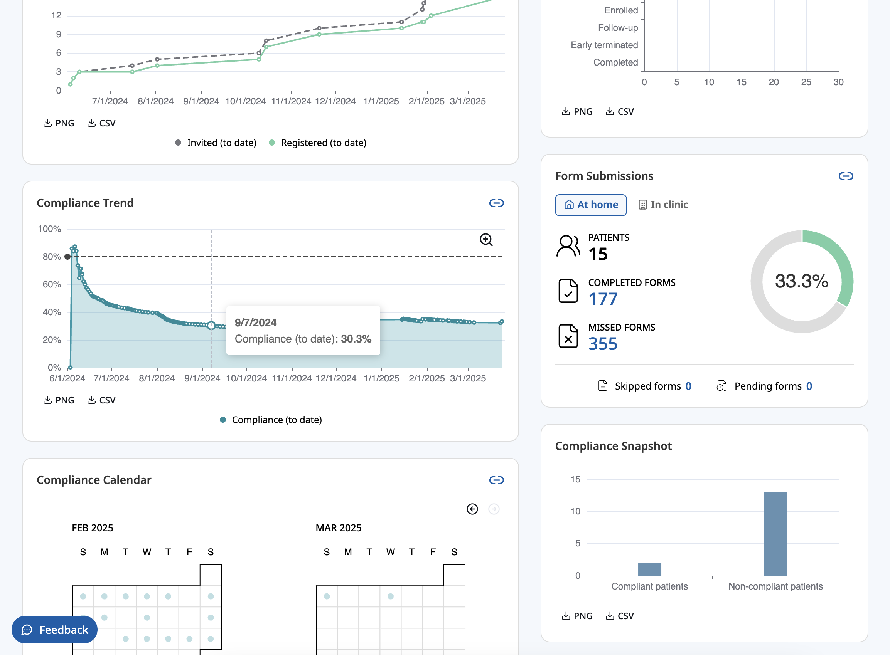

Rendering a dashboard in half a second
Background
Since 2023, I've been developing analytical tools for a clinical trial management system using TypeScript and React.
Problem
Our existing reporting solution was slow to render and cumbersome to use. We needed a fast, responsive reporting framework.
Solution
I developed a new UI with the goal that it should render within 500 milliseconds and handle subsequent user interactions within 300 milliseconds, then applied these benchmarks to even the most complex, multifaceted view of data:

The above pictured dashboard contains six charts and utilizes eight API endpoints, yet it begins rendering in under 200 milliseconds and finishes rendering in under 350 milliseconds with no layout shifts:
How did I do it? Actually, it was a team effort. First, my teammate built snappy REST API endpoints to meet the response-time target of 300 milliseconds. We made sure every endpoint could stand on its own, such that the UI would never need to load endpoints in a waterfall, or cascading, pattern.
On the front end, I employed a variety of techniques to make the UI feel lightning fast:
- I used a foundational component library that allowed me to cherry-pick just the few widgets I needed. This cut down on my bundle size (and the time it takes for the browser to load it).
- I used a Canvas-based data visualization library rather one that relied on SVG, which would burden the DOM and make the UI feel sluggish. (See Selecting the right data visualization library)
- I memoized components to avoid unnecessary re-rendering.
- I aggressively cached queries using a data fetching library.
- I ensured all requests for data could be made in parallel.
- I rendered all data visualization elements immediately, even before data was loaded. This way, they served as the "skeleton" of the page and made loading feel instantaneous.
- I avoided gratuitous animations, which would delay the visual processing of data.
Conclusion
Building a better dashboard started with a simple objective: that it should load in under half a second. Now comes the hard part: maintaining this level of performance as the application grows in scale and scope.